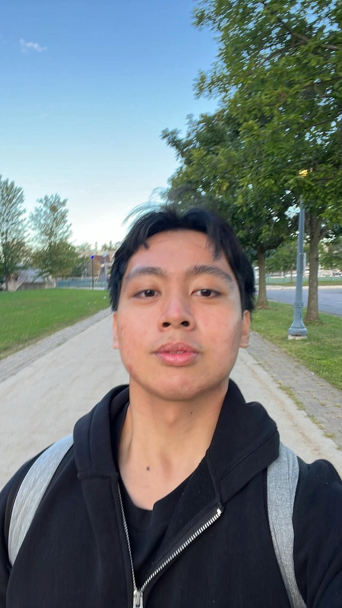
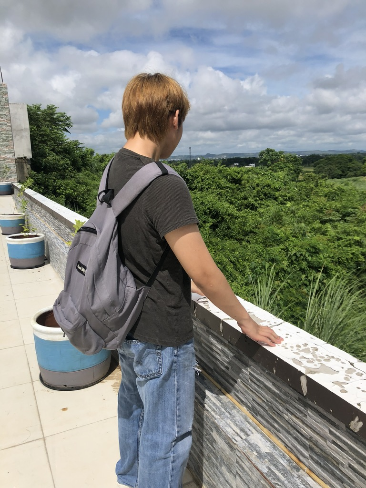
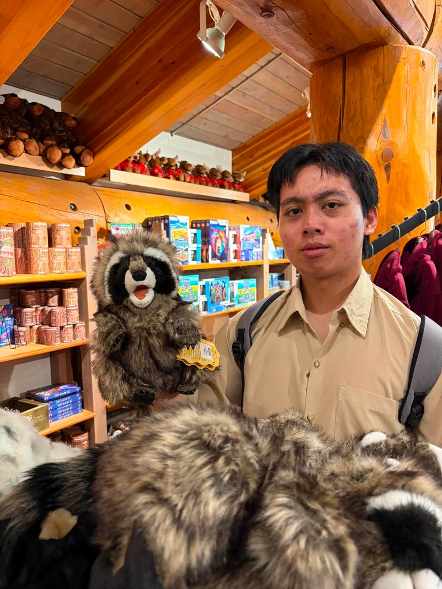

About Me : Aleck Darien Jacildo
Hello! I am a current BComp student at Queens University.
Fun Facts About Me: Loves math (excluding discrete math) and I have a dog!



Projects
- Project One : Random Java Project
- Project Two : Random Python Project
Current Courses
Term One
CISC 121 - Introduction to Computer Science I
CISC 102 - Discrete Structures
Math 121 - Differential and Integral Calculus
GEOL 106 - Environmental and Natural Hazards
STAT 161 - Introduction to Data Science
Term Two
ASTR 101 - Astronomy I : Solar System
CISC 124 - Introduction to Computer Science II
GPHY 102 - Physical Geography
MATH 112 - Introduction To Linear Algebra
MATH 121B - Differential and Integral Calculus
Contact / Socials
Email: Click Here
LinkedIn: Click Here